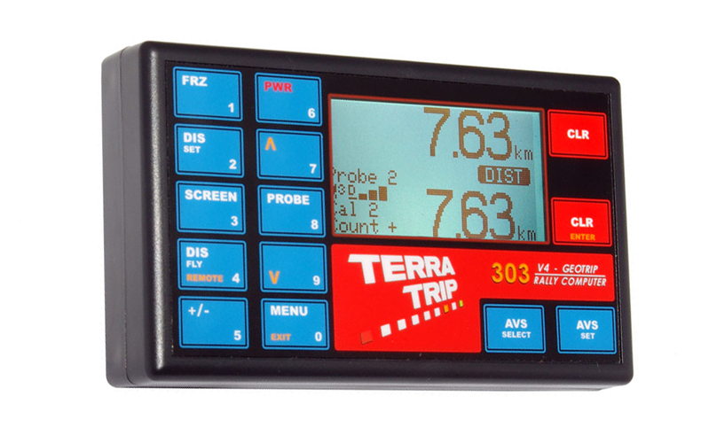

Terratrip 303 GPS
Pris: 2459kr
303 GeoTrip er et præcist tripmeter, der viser afstand, hastighed, gennemsnitshastighed, timing, måltidsmåltid (regelmæssighedsmåltid med valgfri visning). GPS-spor op til 48 satellitter samtidigt, kan dette give ekstremt høj nøjagtighed typisk 0,2% af den drevne afstand. GeoTrip GPS er langt mere præcis end GPS inde i en smartphone eller de fleste bil SatNav enheder. Installation er simpel med vores beslag, enten sugning til forruden eller bolten til køretøjet, og derefter tilsluttes bilens 12 volt forsyning. Der kræves ikke mere installation, men hvis du har brug for en mekanisk probe, kan du også tilslutte 1 eller 2. Hvis du tilslutter en sonde, har du den ekstra funktion af sondens tilbageslag - hvis GPS-signalet går tabt på grund af en tunnel eller lignende, vil sonden automatisk overtage. Hvis ingen mekanisk probe og GPS-signal går tabt, vil enheden estimere den tilbagelagte afstand, når signalet genvindes. Nye funktioner omfatter performance timing, som viser acceleration og deceleration 0-60, 0-100, 0-xx (brugerdefineret hastighed). Performance timing gemmer 8 resultater, og du kan se i realtid. En valgfri fjernbetjening (del nr. T016G) kan monteres, og dette vil vise intervalafstand, hastighed eller gennemsnitshastighed. Fjernbetjeningen har også 7 LED indikatorer. Disse bruges til regelmæssig samling og viser føreren, hvor langt foran eller bagved målhastigheden er i sekunder. Valgfri fjernbetjeningsenhed er tilgængelig via enten fjernbetjening eller håndholdt fjernbetjening.
Specifikationer:
- GPS aktiveret
- Total afstandsdisplay op til 999,99 og interval op til 99,99
- Tid på dagen, stopur, hastighed og gennemsnitshastighed
- Tidsindstillingsdisplayet fryser automatisk, når stopuret er stoppet, hvilket gør det nemt at kontrollere rallytidspunkter
- Kalibrere for miles eller km
- 5 cifferkalibrering
- To sondeindgange
- To kalibreringsnumre
- Hastighedsindikation
- Manuelt justerbar total afstandsdisplay
- Distance Fly for: Hurtig indstilling af afstandsvisning
- Tæller op og ned facilitet
- Split (fryse) funktion
- Elektronisk hukommelse sikkerhedskopieres
- LED-displaybelysning
- Fuldt numerisk tastatur
- Valgfri fjernbetjening til hastighed, intervalafstand eller gennemsnitshastighed. LED regelmæssighed mål hastighed indikatorer
- Performance timers viser: 0-60, 0-100, 0-xx toldhastighed. Timerne viser også deceleration timing.
- Automatisk kalibrering til en bestemt afstand
- Brug GPS til kalibrerede sonder
- HR model, der måler til 1 meter til vejmåling